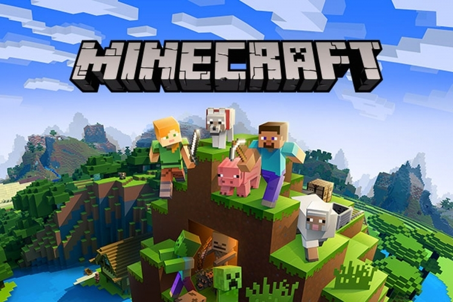
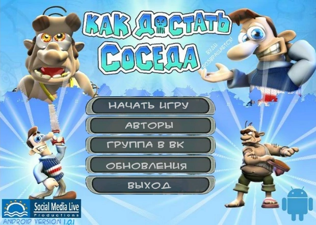

Minecraft

Minecraft получила всеобщее признание среди игровой прессы и множество наград.
Критики выделили такие основные достоинства, как реиграбельность, минималистичный дизайн, динамичный
саундтрек и большая свобода творчества, ограниченная лишь фантазией игрока; недостатками они
посчитали наличие недоработанных предметов и сложности с созданием сетевой игры, а также отсутствие
в игре режима обучения. Разработчики устранили эти недостатки в последующие годы[⇨]. На весну 2021
года было продано более 238 миллионов копий[4] на всех платформах, что делает Minecraft самой
продаваемой игрой в истории, 172 миллиона игроков запускали игру хотя бы раз в месяц.
Читать далее
GTA5

Grand Theft Auto V (сокр. GTA V) — мультиплатформенная компьютерная игра в жанре
action-adventure с открытым миром, разработанная компанией Rockstar North и изданная компанией
Rockstar Games. Изначально игра была выпущена для игровых консолей PlayStation 3 и Xbox 360 в 2013
году, в 2014 году переиздана для PlayStation 4 и Xbox One, в 2015 году для Windows и в 2022 году для
PlayStation 5 и Xbox Series X/S. Является пятнадцатой по счёту игрой серии Grand Theft Auto и
следующей крупной игрой после Grand Theft Auto IV, выпущенной в 2008 году[9]
Действие игры происходит в вымышленном штате Сан-Андреас, прообразом которого послужила Южная
Калифорния. Сюжет в однопользовательском режиме строится вокруг приключений троих грабителей,
устраивающих всё более дерзкие ограбления и противостоящих как организованной преступности, так и
правоохранительным ведомствам. В процессе игры игрок управляет выбранным персонажем в режиме от
первого или от третьего лица; персонаж может свободно передвигаться по обширному миру игры как
пешком, так и на автомобилях и других видах транспорта. Особенностью Grand Theft Auto V по сравнению
с другими играми серии является возможность переключаться между персонажами в любой момент, как во
время выполнения заданий, так и вне их. Многие задания игры связаны с ограблениями и угоном
автомобилей; при этом игровой персонаж может участвовать в перестрелках и погонях. Grand Theft Auto
Online представляет собой встроенный многопользовательский онлайн-режим, поддерживающий до 30
игроков одновременно — для них предлагаются как кооперативные, так и соревновательные задания.
Читать далее
Как достать соседа

Как достать соседа» (англ. Neighbours from Hell) — компьютерная игра-аркада.
Главной целью игры является месть соседу. Герою нужно находить предметы и использовать их, чтобы
навредить соседу. В одной игре присутствуют 14 эпизодов. Игра была выпущена для Windows в США 22
сентября 2003 года. 8 октября 2020 года на PlayStation 4, Xbox One и Nintendo Switch была выпущена
ремастер-компиляция первых двух игр под названием Neighbours Back From Hell. Ремастер отличается
повышенной частотой кадров и HD-графикой.
Сюжет
Вуди — обычный человек, у которого счастливая жизнь, пока его сосед мистер Ротвейлер не делает его
жизнь несчастной. Вуди решает полностью отомстить мистеру Ротвейлеру и вызывает телевизионную
команду, которая снимает одноименное реалити-шоу, показывающее отношения соседей с худшей стороны.
Читать
далее